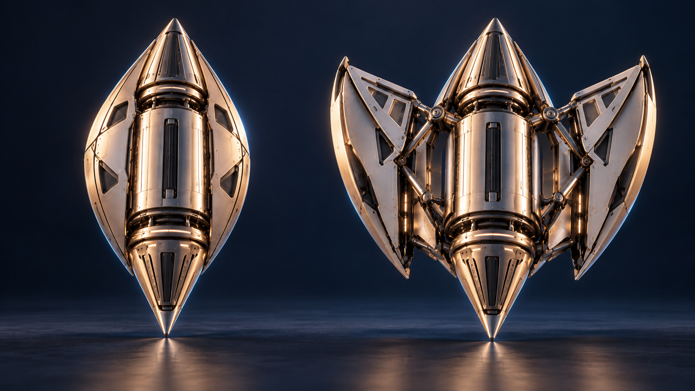
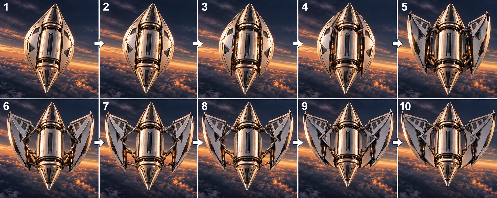

Aetherion
A transforming capsule concept with four symmetrically deployable wings.
Aetherion explores a transition from a compact capsule to a four-wing configuration. The visual study centers on consistent wing shape, symmetric deployment, and a sequence that could later be implemented through mechanical linkages, position sensing, and embedded control.
- Role
- Independent concept designer
- Engineering approach
- Electrical and mechanical system integration
- Control strategy
- Coordinated actuation
- Next milestone
- Full Deployment

A compact envelope.
A deliberate
transformation.
Aetherion is a transforming capsule concept featuring four symmetrically arranged folding wings. Its design emphasizes compact packaging, consistent wing geometry, clearance around the wing roots, and retention of the deployed configuration.
The project integrates these mechanical considerations with a proposed electrical architecture for position sensing, coordinated actuation, and deployment-state monitoring. Configuration drawings, system diagrams, and a transformation storyboard illustrate how sensor feedback and control logic would support consistent wing movement and identify incomplete or uneven deployment.
Four repeated wing elements
The visual arrangement uses four symmetrically distributed wing petals around the capsule; equal shape and spacing are the starting geometry requirements.
Compact-to-open transition
The closed concept brings the wing surfaces close to the body, while the deployed concept separates them into a wider configuration.
Controlled motion and retention
The engineering phase must define hinge axes, clearance, hard stops, latching, and the means of retaining each configuration.
Balanced deployment
The proposed control logic compares wing position feedback to detect incomplete or uneven movement and confirms deployment only when all wings reach their designated positions.
A transformation,
frame by frame.
The ten-frame concept storyboard records the intended progression from compact packaging to open wings. Select a frame to read the engineering question associated with that stage.

Compact configuration
The capsule establishes the stowed envelope; a CAD model would define how wing thickness and hinge packaging fit inside this profile.
The concept storyboard illustrates the transition from compact stowage to the intended deployed configuration, highlighting wing alignment, symmetry, and the opening sequence.
Four wings.
One integrated design.
The project-specific drawing shows the capsule’s pointed upper and lower ends, longitudinal folding wing panels, mirrored deployed front view, and four-wing axial projection.

Concept schematic illustrating capsule geometry, wing symmetry, and deployment configurations.
From deployment intent
to position feedback.
The proposed electronics would manage a bench deployment mechanism. Power requirements, actuator architecture, and sensing should be selected together with the hinge design.
Mechanical engineering focus
- Wing-root and linkage geometryDevelop the folding-wing assembly in SolidWorks, checking the complete swept volume, root clearances, and the transition into the open hard-stop position.
- Structural and packaging studyCompare material and hinge concepts against the intended bench loads; use a simplified MATLAB motion model to organize angle, travel, and timing requirements.
Electrical engineering focus
- Proposed controller and feedbackEvaluate an ESP32-based C++ prototype with separate wing-position inputs and a deployment state machine that distinguishes commanded motion from confirmed position.
- Proposed PCB workflowUse KiCad for a future two-layer interface board after selecting actuators, with driver connections, regulated logic power, sensor inputs, and accessible bench-test points.
Turn the storyboard
into an engineering plan.
The development plan centers on a controlled bench mechanism to evaluate deployment consistency, sensor feedback, and coordinated actuation.
Establish the visual concept
Define the compact capsule and the intended four-wing arrangement, focusing on symmetry and consistent repeated geometry.
Document the intended sequence
Use the ten-frame storyboard to communicate the transformation and identify the points where clearance, hinge travel, and retention need engineering definition.
Model the wing assembly
Create the parametric geometry, define hinge coordinates and stops, and inspect the swept volume throughout the complete opening and closing sequence.
Build a single-wing fixture
Measure hinge travel, required actuation force, backlash, and stop behavior on one wing before assembling the complete mechanism.
Implement synchronized bench deployment
Integrate the chosen actuator architecture and position sensors; compare feedback against commanded states and handle incomplete deployment explicitly.
Record repeatability and fault behavior
Run defined deployment cycles, inspect wear, and document position agreement, timing, current, and controlled fault responses.
Prove the mechanism
before expanding its role.
The proposed test plan evaluates unobstructed movement, accurate position sensing, and consistent locking in the deployed configuration.
| Engineering question | Proposed method | Evidence to record |
|---|---|---|
| Wing clearance | Inspect the CAD swept volume and slowly cycle a physical fixture. | Interference locations, clearance measurements, and geometry revisions. |
| Deployment symmetry | Measure each wing angle across repeated bench cycles. | Relative angle differences, timing variation, and root backlash. |
| Open-state retention | Apply defined bench loads to the stopped or latched assembly. | Deflection, latch behavior, and any permanent deformation. |
| Electrical behavior | Measure actuator current and sensor outputs throughout travel. | Peak current, supply variation, position consistency, and thermal observations. |
| Deployment Verification | Introduce a controlled obstruction or disconnect a position signal. | Fault recognition, shutdown behavior, status reporting, and recovery steps. |
Let’s discuss engineering opportunities.
I’m seeking opportunities to learn from teams developing electrical hardware, embedded systems, and integrated electromechanical products.